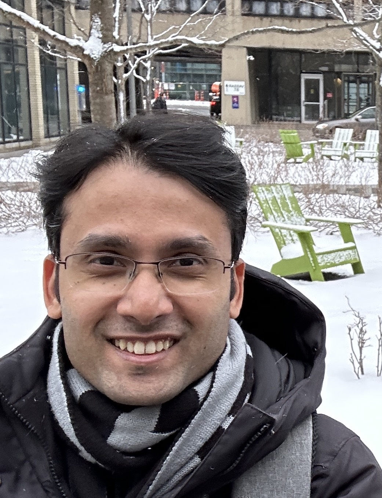

I work on speech AI, large language models, speaker diarization, and healthcare AI systems.
My interests spans across understanding different speech signals and NLP, with application of AI to robust ASR, model compression, model's uncertainty, speaker diarization/verification, privacy-preserving voice deepfakes, and scalable conversational AI systems.
I am a Research Scientist at Zoom Communications working on production-scale Automatic Speech Recognition (ASR) for Voice AI Agents, healthcare speech systems, and word timing estimation.
Previously, I was a Postdoctoral Associate at the Massachusetts Institute of Technology (MIT CSAIL), where I worked with Dr. James Glass on robust speech recognition, trustworthy healthcare AI, uncertainty-driven pseudo-label filtering, and privacy-preserving voice deepfakes.
I completed my Ph.D. and M.S. in Computer Science at IIT Madras, working with Prof. C. Chandra Sekhar and Prof. Hema Murthy. My research focused on speaker diarization, continual transfer learning, and robust speech systems.
I have also contributed extensively to the open-source SpeechBrain toolkit as a core contributor during my internship at MILA, Montreal, Canada with Prof. Mirco Ravanelli and Prof. Yoshua Bengio.